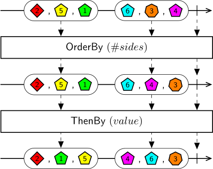

ThenBy operates on sequences returned by any of the OrderBy, OrderByDescending, ThenBy, or ThenByDescending operators. For each ordered collection emitted by the source sequence, the result sequence will emit a new ordered collection where elements in the collection are subsequently sorted in ascending order of the keys specified in the KeySelector property.
Warning
The ordered collections returned in the result sequence are lazy. The ordering is not really evaluated until the collection is enumerated by a downstream operator such as Merge.